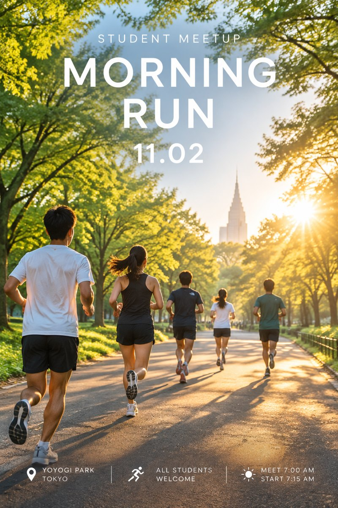

MEDIA
読みもの
学生イベントの“いま”と、行く前に知りたいこと。

新歓 2026 完全ガイド：サークル選びで後悔しない、5つの視点
雰囲気・お金・時間・人数・続け方。先輩30人に聞いた「入ってから気づいたこと」から、見学で確かめるべきポイントをまとめました。

LATEST
新着の記事
「はじめまして」が苦手な人のための、イベントの楽しみ方

渋谷で学生が集まる、夜のイベントスペース5選

24時間で何がつくれる？ ハッカソン常連の4年生に聞く

学園祭ライブの裏側：PA担当がいちばん緊張する瞬間

ライブハウスを借りる前に確認したい7つのこと
イベント告知文の書き方：申込が伸びた3つの例
このカテゴリの記事はまだありません。